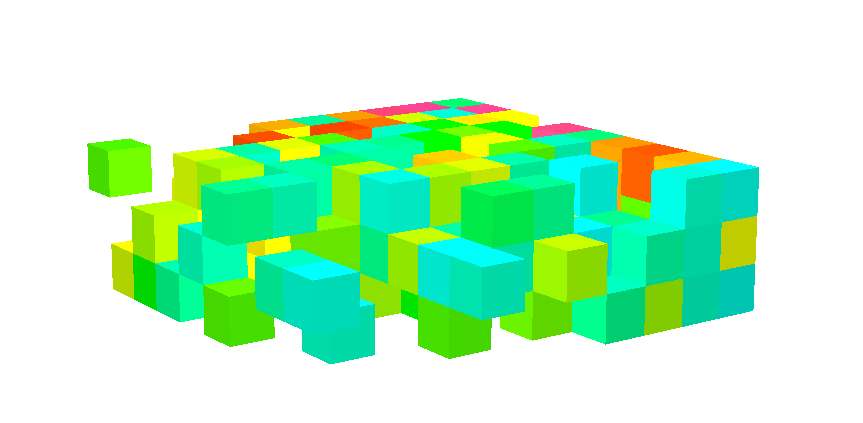
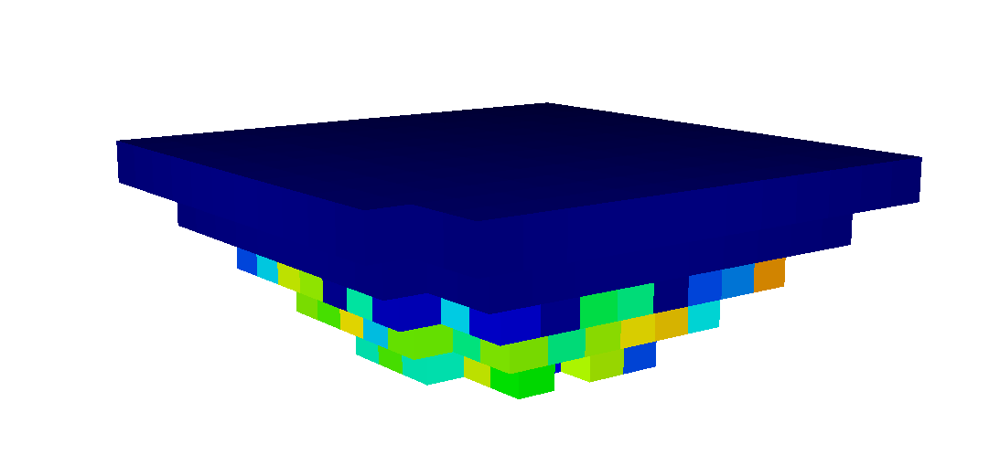
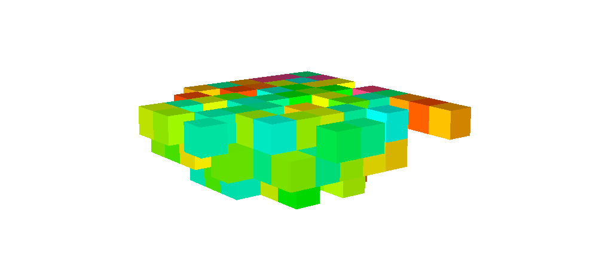

Basic Example
This is a basic example of how to use the py-lerchs-grossmann package to obtain the optimum pit in a 3d block model.
Block Model
The block model must have the following columns: id and value, for the proper performance of the package. Other columns or extra data do not affect the performance of the package. In this example, the columns x, y, and z are not used by the algorithm.
Example: block_model.csv
| id | x | y | z | cu |
|---|---|---|---|---|
| 1 | 10 | 10 | 10 | 0.0 |
| 2 | 10 | 10 | 20 | 0.0 |
| 3 | 10 | 10 | 30 | 0.0 |
| 4 | 10 | 10 | 40 | 0.0 |
| 5 | 10 | 10 | 50 | 0.0 |
| ... | ... | ... | ... | ... |
| 1125 | 150 | 150 | 50 | 0.0 |
In this case, the block model doesn't include the value of each block, so we need to calculate it.
In Python, using the pandas package looks like this:
import pandas as pd
import py_lerchs_grossmann as plg
df = pd.read_csv("block_model.csv")
price = 2.2 # USD/lb
credit_subproducts = 0.65 # USD/lb
cost_melting_refine_sell = 0.66 # USD/lb
metallurgy_recovery = 82 # %
density = 2.7 # ton/m3
volume = 10 * 10 * 10 # m3
cost_mine = 1.8 # USD/ton
cost_administration_plant = 6.5 # USD/ton
df["value"] = (price + credit_subproducts - cost_melting_refine_sell) * (
df["cu"] / 100
) * (metallurgy_recovery / 100) * 2204.6 * (volume * density) - (
cost_mine + cost_administration_plant
) * (
volume * density
)
Arc DataFrame
The Arc DataFrame is a table that contains the connections—or arcs—between blocks. In this case, the Arc DataFrame is not available, but it can be generated using the build_df_arc() function from the py_lersch_groosmann package.
df_arc = plg.build_df_arc(df, block_size=10)
The main funtion
Given the block model containing id and value, along with the Arc DataFrame, we can apply the main function.
Complete code
import pandas as pd
import py_lerchs_grossmann as plg
df = pd.read_csv("block_model.csv")
price = 2.2 # USD/lb
credit_subproducts = 0.65 # USD/lb
cost_melting_refine_sell = 0.66 # USD/lb
metallurgy_recovery = 82 # %
density = 2.7 # ton/m3
volume = 10 * 10 * 10 # m3
cost_mine = 1.8 # USD/ton
cost_administration_plant = 6.5 # USD/ton
df["value"] = (price + credit_subproducts - cost_melting_refine_sell) * (
df["cu"] / 100
) * (metallurgy_recovery / 100) * 2204.6 * (volume * density) - (
cost_mine + cost_administration_plant
) * (
volume * density
)
df_arc = plg.build_df_arc(df, block_size=10)
df_pit = plg.main(df, df_arc, False)
df_pit.to_csv("block_model_on_pit.csv", index=False)
Output
Algoritm completed !!!
------------------------
df_arc_positive
start_real end_real value type strength
0 0.0 75.0 -22410.000000 p weak
1 0.0 144.0 -7495.364446 p weak
2 0.0 351.0 -16122.143626 p weak
3 0.0 491.0 -5432.787790 p weak
4 0.0 496.0 -22410.000000 p weak
.. ... ... ... ... ...
640 923.0 1004.0 19968.953722 m weak
641 857.0 928.0 17429.778104 m weak
642 924.0 1005.0 6562.205458 m weak
643 868.0 939.0 4854.065356 m weak
644 772.0 853.0 4802.005086 m weak
[645 rows x 5 columns]
df_x
id x y z value cu
0 0 NaN NaN NaN 0.0 NaN
1 5 10.0 10.0 50.0 -22410.0 0.0
2 10 10.0 20.0 50.0 -22410.0 0.0
3 15 10.0 30.0 50.0 -22410.0 0.0
4 20 10.0 40.0 50.0 -22410.0 0.0
.. ... ... ... ... ... ...
430 935 130.0 70.0 50.0 -22410.0 0.0
431 940 130.0 80.0 50.0 -22410.0 0.0
432 945 130.0 90.0 50.0 -22410.0 0.0
433 950 130.0 100.0 50.0 -22410.0 0.0
434 955 130.0 110.0 50.0 -22410.0 0.0
[435 rows x 6 columns]
df_y_copy
id x y z cu value
13 70 10 140 50 0.0 -22410.0
14 75 10 150 50 0.0 -22410.0
38 139 20 130 40 0.0 -22410.0
40 144 20 140 40 0.0 -22410.0
41 145 20 140 50 0.0 -22410.0
.. ... ... ... .. ... ...
640 1105 150 110 50 0.0 -22410.0
641 1110 150 120 50 0.0 -22410.0
642 1115 150 130 50 0.0 -22410.0
643 1120 150 140 50 0.0 -22410.0
644 1125 150 150 50 0.0 -22410.0
[211 rows x 6 columns]
Runtime: 520.9424 seconds
Images
- Original block model with cutoff grade of zero. (Before running the algorithm)

- Original block model with a cutoff grade of 0.5. (Before running the algorithm)

- Original block model with cutoff grade of zero. (After running the algorithm)

- Original block model with cutoff grade of 0.5. (After running the algorithm)
